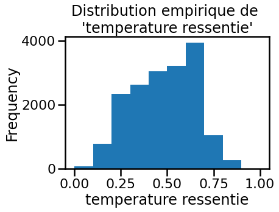
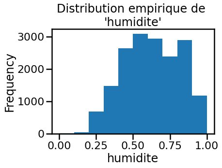
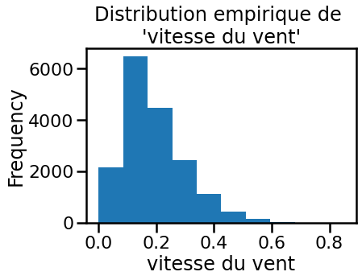
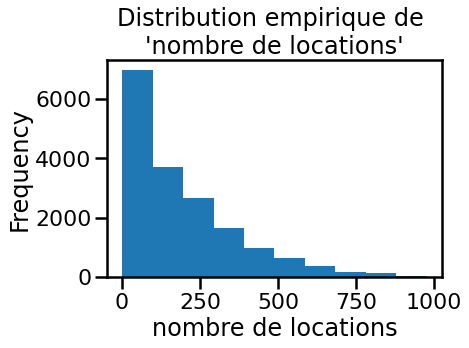
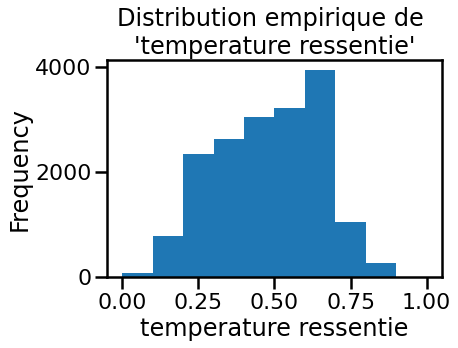
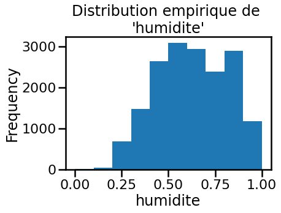
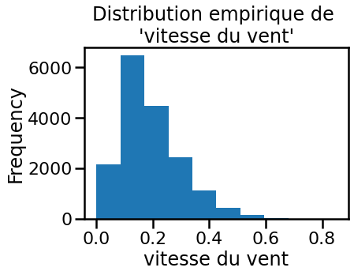
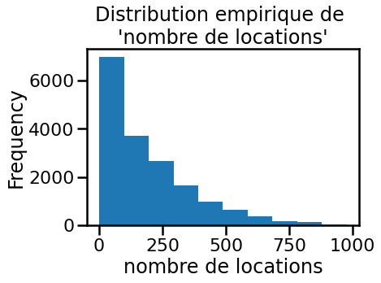

Analyse de statistique tradionnelle¶
Dans cet exercice, nous allons étudier la base de données que nous réutiliserons dans les exercices suivants. Pour cela, nous pratiquerons une analyse statistique traditionelle, ne faisant pas appel à des outils de machine learning. Le but de l’exercice sera donc avant tout d’acquérir des connaissances sur les données.
Notre jeu de données¶
Pour cet exercice, nous allons utiliser un jeu de données structuré. En
effet, ces données peuvent être représentées sous la forme d’un tableau de
données. Dans les chapitres précédents, nous avons vu utilisé la librairie
pandas et la classe DataFrame pour stocker ce type de données.
Les données sont stockées dans fichier CSV et nous pouvons utiliser
spécifiquement la fonction read_csv pour charger les données.
import pandas as pd
location_velo = pd.read_csv("../datasets/bike_sharing/hour.csv")
Une bonne pratique avant d’effectuer une analyse statistique est de
comprendre quelles sont les variables stockées. Pour cela, nous allons
utiliser la method .info() de la classe DataFrame.
location_velo.info()
<class 'pandas.core.frame.DataFrame'>
RangeIndex: 17379 entries, 0 to 17378
Data columns (total 17 columns):
# Column Non-Null Count Dtype
--- ------ -------------- -----
0 ID 17379 non-null int64
1 date 17379 non-null object
2 saison 17379 non-null int64
3 annee 17379 non-null int64
4 mois 17379 non-null int64
5 heure 17379 non-null int64
6 vacances 17379 non-null int64
7 jour de la semaine 17379 non-null int64
8 jour travaille 17379 non-null int64
9 meteo 17379 non-null int64
10 temperature 17379 non-null float64
11 temperature ressentie 17379 non-null float64
12 humidite 17379 non-null float64
13 vitesse du vent 17379 non-null float64
14 nombre de locations sans abonnement 17379 non-null int64
15 nombre de locations avec abonnement 17379 non-null int64
16 nombre de locations 17379 non-null int64
dtypes: float64(4), int64(12), object(1)
memory usage: 2.3+ MB
Cette méthode est particulièrement utile pour comprendre :
le noms des variables stockées dans le fichier CSV
le type de données de chaque variable inféré par
pandasla présence ou non de valeurs manquantes pour chaque variable
Comme précédemment présenté, pandas généralement stocke les chaînes de
caractères en utilisant le type obj. Pour le jeu de données que nous
utilisons, la colonne date est stockée de cette manière. En revanche, il
serait mieux de donner à pandas cette information au moment de la lecture
pour qu’il puisse caster les chaînes de caractères en dates.
Nous allons donc utiliser l’option parse_date de la fonction read_csv
pour convertir la colonne date.
location_velo = pd.read_csv("../datasets/bike_sharing/hour.csv", parse_dates=["date"])
location_velo.info()
<class 'pandas.core.frame.DataFrame'>
RangeIndex: 17379 entries, 0 to 17378
Data columns (total 17 columns):
# Column Non-Null Count Dtype
--- ------ -------------- -----
0 ID 17379 non-null int64
1 date 17379 non-null datetime64[ns]
2 saison 17379 non-null int64
3 annee 17379 non-null int64
4 mois 17379 non-null int64
5 heure 17379 non-null int64
6 vacances 17379 non-null int64
7 jour de la semaine 17379 non-null int64
8 jour travaille 17379 non-null int64
9 meteo 17379 non-null int64
10 temperature 17379 non-null float64
11 temperature ressentie 17379 non-null float64
12 humidite 17379 non-null float64
13 vitesse du vent 17379 non-null float64
14 nombre de locations sans abonnement 17379 non-null int64
15 nombre de locations avec abonnement 17379 non-null int64
16 nombre de locations 17379 non-null int64
dtypes: datetime64[ns](1), float64(4), int64(12)
memory usage: 2.3 MB
Nous pouvons donc observer que la conversion en date a bien été effectuée.
Il semblerait également que la colonne ID ne soit pas pertinente. Nous
pourrions nous attendre à ce quelle contienne des entiers uniques. Nous
allons le vérifier en utilisant la méthode .nunique().
location_velo["ID"].nunique() == len(location_velo)
True
Il est donc possible d’utiliser pour le moment cette colonne comme l’index de notre dataframe.
location_velo = location_velo.set_index("ID")
Maintenant, il est temps de regarder les données. Nous allons afficher les cinq premières lignes de notre jeu de données.
location_velo.head()
| date | saison | annee | mois | heure | vacances | jour de la semaine | jour travaille | meteo | temperature | temperature ressentie | humidite | vitesse du vent | nombre de locations sans abonnement | nombre de locations avec abonnement | nombre de locations | |
|---|---|---|---|---|---|---|---|---|---|---|---|---|---|---|---|---|
| ID | ||||||||||||||||
| 1 | 2011-01-01 | 1 | 0 | 1 | 0 | 0 | 6 | 0 | 1 | 0.24 | 0.2879 | 0.81 | 0.0 | 3 | 13 | 16 |
| 2 | 2011-01-01 | 1 | 0 | 1 | 1 | 0 | 6 | 0 | 1 | 0.22 | 0.2727 | 0.80 | 0.0 | 8 | 32 | 40 |
| 3 | 2011-01-01 | 1 | 0 | 1 | 2 | 0 | 6 | 0 | 1 | 0.22 | 0.2727 | 0.80 | 0.0 | 5 | 27 | 32 |
| 4 | 2011-01-01 | 1 | 0 | 1 | 3 | 0 | 6 | 0 | 1 | 0.24 | 0.2879 | 0.75 | 0.0 | 3 | 10 | 13 |
| 5 | 2011-01-01 | 1 | 0 | 1 | 4 | 0 | 6 | 0 | 1 | 0.24 | 0.2879 | 0.75 | 0.0 | 0 | 1 | 1 |
Il apparaît que les données associées à la notion de date sont présentes dans
plusieurs colonnes : date, annee, mois. De plus, des informations
concernant l’heure (colonne heure), la saison (colonne saison), le jour
de la semaine (colonne jour de la semaine) et le type de jour (colonnes
jour travaille et vacances) sont également présentes.
Il sera donc important de décider quelles variables à inclure lorsque nous définirons le type de problème à résoudre. Nous devons également noter que la majorité de ces données sont encodées de manière ordinale. Ceci est particulièrement important et doit être pris en compte lorsque nous choisirons notre modèle prédictif de machine learning.
Ensuite, nous pouvons observer des variables liées au condition
météorologique : temperature, temperature ressentie, humidite et
vitesse du vent. Nous pouvons donc présentir que certaines de ces variables
pourraient être corrélées.
Finalement, nous observons trois variables liées aux nombres de locations de
vélos : nombre de locations, nombre de locations sans abonnement et
nombre de locations avec abonnement.
Il advient que le problème que nous allons résoudre soit de prédire le nombre de locations de vélos pour une heure donnée. Nous pouvons d’ores et déjà exclure l’information liée aux abonnements et se focaliser seulement à la prédiction du nombre de locations globale.
Il est donc temps de sélectionner les variables à inclure dans notre analyse
statistique. Pour le moment nous pouvons exclure les variables suivantes :
nombre de location sans abonnement et nombre de locations avec abonnement.
variable_a_exclure = [
"nombre de locations sans abonnement",
"nombre de locations avec abonnement",
]
location_velo = location_velo.drop(columns=variable_a_exclure)
Analyse des données d’intérêt¶
Analyse des variables numériques¶
Nous allons maintenant analyser les données que nous venons de sélectionner en utilisant des statistiques de base.
Une première analyse assez simple consiste à regarder des statistiques tels que la moyenne, la variance, la quantile, la distribution des valeurs, etc. Cependant, ce type d’analyse n’est utile que pour obtenir des informations sur les variables de type numérique.
Il est important de différencier les variables encodées de manière ordinale et donc te type numérique des variables numériques “naturelles”. Concrètement, les informations liées à la date dans notre jeu de données appartiennent à la première catégorie. Calculer par exemple la moyenne ou la variance sur ce type de variable n’est pas pertinent. En revanche, calculer la moyenne ou la variance sur des variables naturellement numériques tels que la vitesse du vent ou la température ressentie seront pertinent.
Nous pouvons donc définir les variables de type numérique que nous voulons analyser dans un premier temps.
variable_numerique = [
"temperature",
"temperature ressentie",
"humidite",
"vitesse du vent",
"nombre de locations",
]
Nous pouvons maintenant utiliser la méthode .describe() sur notre dataframe
afin de calculer les statistiques de base.
location_velo[variable_numerique].describe()
| temperature | temperature ressentie | humidite | vitesse du vent | nombre de locations | |
|---|---|---|---|---|---|
| count | 17379.000000 | 17379.000000 | 17379.000000 | 17379.000000 | 17379.000000 |
| mean | 0.496987 | 0.475775 | 0.627229 | 0.190098 | 189.463088 |
| std | 0.192556 | 0.171850 | 0.192930 | 0.122340 | 181.387599 |
| min | 0.020000 | 0.000000 | 0.000000 | 0.000000 | 1.000000 |
| 25% | 0.340000 | 0.333300 | 0.480000 | 0.104500 | 40.000000 |
| 50% | 0.500000 | 0.484800 | 0.630000 | 0.194000 | 142.000000 |
| 75% | 0.660000 | 0.621200 | 0.780000 | 0.253700 | 281.000000 |
| max | 1.000000 | 1.000000 | 1.000000 | 0.850700 | 977.000000 |
Nous pouvons observer que toutes ces variables sont comprises entre 0 et 1.
L’ordre de grandeur des moyennes et des standard déviations est équivalent
pour toutes ces variables, mis à part la variable nombre de locations ce
qui n’est pas un problème puisque cette variable devra être prédite. Elles ne
sont donc pas exprimées dans leurs unités naturelles. Cela nous indique
également que nous n’aurons pas forcément besoin de normaliser (même si celà
ne serait pas une mauvaise chose si nous utilisons un modèle lineaire ou qui
utilise des distances Euclidienne) les données en amont dans la partie de
prétraitement de notre modèle prédictif.
En plus d’extraire ces informations, nous pouvons observer visuellement la
distribution empirique des différentes variables. Pour cela, nous pouvons
utiliser la méthode .plot.hist() de pandas.
# Afin de changer le style de nos graphiques, nous pouvons utiliser seaborn
# context.
import seaborn as sns
sns.set_context("poster")
import matplotlib.pyplot as plt
for variable in variable_numerique:
_, ax = plt.subplots()
location_velo[variable].plot.hist(ax=ax)
ax.set_xlabel(f"{variable}")
_ = ax.set_title(f"Distribution empirique de \n'{variable}'")
 







En observant les graphiques, nous pouvons apprécier le type de distribution empirique que nous obtenons. D’ailleurs, il est intéressant de noter que ces distributions ne sont pas de type Gaussienne ce qui pourrait également avoir un impact sur le design de notre modèle prédictif.
Nous pouvons aller un peu plus loin dans notre analyse statistique en observant le lien marginal entre chacune de ces variables. Il faut noter que le lien marginal est une relation entre deux variables et ne sera pas le lien appris par un modèle prédictif de machine learning qui apprendra un lien conditionnel entre ces mêmes variables. En d’autres mots, lorsque nous regardons l’impact d’une variable sur une autre dans un modèle prédictif, celle-ci sera dépendante de la valeurs de toutes les autres variables. Ici, en utilisant seulement deux variables à la fois, nous négligeons tous les liens qui pourraient exister avec les autres variables.
La librairie seaborn nous permet de visualiser les liens marginales entre
deux variables. Pour cela, nous pouvons utiliser la méthode .pairplot()
import numpy as np
# Nous pouvons utiliser un sous échantillonnage pour accelerer la visualisation
rng = np.random.RandomState(42)
index_sous_echantillons = rng.choice(
location_velo.index,
size=1_000,
replace=False,
)
_ = sns.pairplot(
location_velo.loc[index_sous_echantillons, variable_numerique],
kind="kde",
diag_kind="kde",
height=4,
)
Dans ce graphique, la diagonale correspond à la distribution empirique et est donc équivalente aux histogrammes que nous avons vus précédemment.
Nous sommes particulièrement intéressés par la dernière colonne de notre graphique qui correspond au nombre de locations. Une corrélation entre cet variable et tout autre variable pourrait nous permettre de savoir qu’un modèle prédictif fonctionnera. En revanche, cela nous indiquerait également que de simple statisque suffirait pour nous prédire cette variable.
Nous pouvons observer que la distribution de la variable nombre de locations n’est pas Gaussienne et à une longue queue. Cela nous indique
qu’il serait intéressant de prétraiter cette variable ou d’utiliser un modèle
prédictif qui ne suppose pas que la variable à prédire soit Gaussienne.
En ce qui concerne les liens marginales avec les autres variables, nous noter un effet de seuil : les valeurs sont observées au dessus ou en dessous de la diagonale suivant si les variables sont postivement ou négativement corrélées.
En observant les autres graphiques, nous pouvons constater que les variables
temperature et temperature ressentie sont corrélées.
Au lieu de visualiser les relations en utilisant la méthode KDE (kernel density estimation), nous pouvons représenter graphiquement tous les points.
_ = sns.pairplot(
location_velo[variable_numerique],
kind="scatter",
diag_kind="kde",
height=4,
)
À partir de cette représentation, nous pouvons observer des nuages de points
assez curieux. Dans le graphique liant temperature et temperature ressentie, nous pouvons observer une ligne horizontale (ou verticale suivant
la relation considérée). Il semblerait que la température ressentie reste
constante alors que la température augmente.
Nous pouvons observer des phénomènes identiques pour d’autres variables : lorsque la vitesse du vent ou l’humidité sont nul. Ces échantillons pourraient peut-être correspondre à des données bruitées.
Finalement, il pourrait être intéressant d’observer si il existe une relation
entre le nombre de locations et un groupe à l’intérieur d’une des variables.
Nous pouvons “discretizer” la variable nombre de locations en cinq groupes
définis par des quantiles. La function qcut() de pandas nous permet de
discretiser une variable.
location_velo_discrete = location_velo.copy()
location_velo_discrete["nombre de locations"] = pd.qcut(
location_velo_discrete["nombre de locations"],
q=5,
)
Nous pouvons maintenant encoder la valeur de la variable nombre de locations avec une couleur.
_ = sns.pairplot(
location_velo_discrete[variable_numerique],
hue="nombre de locations",
kind="scatter",
diag_kind="kde",
height=4,
)
Sur ce graphique, il est difficile d’observer une tendance quand nous
étudions trois variables à la fois (l’axe x et y de chaque graphique
représentent deux variables alors que la couleur représente une variable
additionelle). En revanche, nous pouvons nous attarder sur les graphiques de
la diagonale.
Pour les graphiques de température, nous pouvons observer que les catégories des deux plus faibles nombres de locations sont dissociées des deux catégories des deux plus grand nombres de locations.
Nous pouvons noter une tendance similaire pour les deux catégories
représentant les deux plus petits nombres de locations pour la variable
humidite.
En revanche, il semble que nous ne pouvons pas observer un impact de la vitesse du vent sur le nombre de locations.
Analyse des variables liées à la date et l’heure¶
Maintenant, nous allons nous intéresser aux variables liées au temps. Rappelons dans un premier temps les variables que nous avons dans notre jeu de données.
location_velo.head()
| date | saison | annee | mois | heure | vacances | jour de la semaine | jour travaille | meteo | temperature | temperature ressentie | humidite | vitesse du vent | nombre de locations | |
|---|---|---|---|---|---|---|---|---|---|---|---|---|---|---|
| ID | ||||||||||||||
| 1 | 2011-01-01 | 1 | 0 | 1 | 0 | 0 | 6 | 0 | 1 | 0.24 | 0.2879 | 0.81 | 0.0 | 16 |
| 2 | 2011-01-01 | 1 | 0 | 1 | 1 | 0 | 6 | 0 | 1 | 0.22 | 0.2727 | 0.80 | 0.0 | 40 |
| 3 | 2011-01-01 | 1 | 0 | 1 | 2 | 0 | 6 | 0 | 1 | 0.22 | 0.2727 | 0.80 | 0.0 | 32 |
| 4 | 2011-01-01 | 1 | 0 | 1 | 3 | 0 | 6 | 0 | 1 | 0.24 | 0.2879 | 0.75 | 0.0 | 13 |
| 5 | 2011-01-01 | 1 | 0 | 1 | 4 | 0 | 6 | 0 | 1 | 0.24 | 0.2879 | 0.75 | 0.0 | 1 |
Une première analyse qui sera intéressante sera de combiner la variable
date et heure pour avoir une variable de type datetime ou nous pourrons
analyser un eventuelle relation entre ces périodes et le nombre de locations.
location_velo["date"] = pd.to_datetime(
{
"year": location_velo["date"].dt.year,
"month": location_velo["date"].dt.month,
"day": location_velo["date"].dt.day,
"hour": location_velo["heure"],
}
)
_, ax = plt.subplots(figsize=(6, 4))
location_velo.set_index("date").resample("3D")["nombre de locations"].mean().plot(ax=ax)
_ = ax.set_ylabel("Nombre de locations")
variable_date = [
"saison",
"mois",
"heure",
"jour de la semaine",
"jour travaille",
]
location_velo[variable_date] = location_velo[variable_date].astype("category")
for variable in variable_date:
height_axis = location_velo[variable].nunique() * 0.5
_, ax = plt.subplots(figsize=(6, height_axis))
sns.boxplot(
y=variable,
x="nombre de locations",
data=location_velo,
color="white",
ax=ax,
)
sns.stripplot(
y=variable,
x="nombre de locations",
data=location_velo,
alpha=0.01,
color="black",
ax=ax,
)